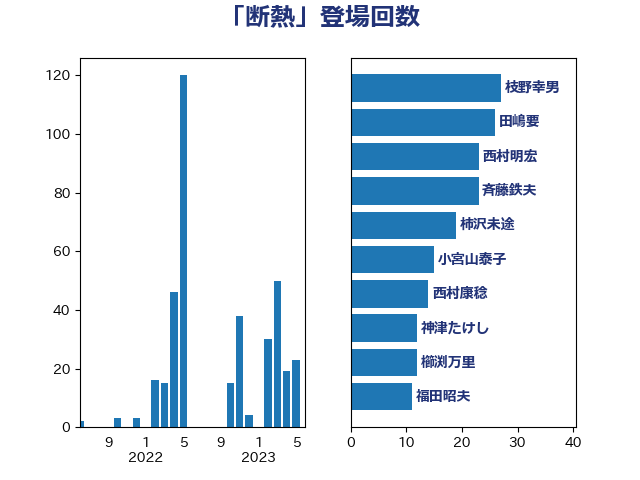

単語「断熱」

| 枝野幸男 | 立憲民主党 | 27 回 |
| 田嶋要 | 立憲民主党 | 26 回 |
| 西村明宏 | 自由民主党 | 23 回 |
| 斉藤鉄夫 | 公明党 | 23 回 |
| 柿沢未途 | 無所属 | 19 回 |
| 小宮山泰子 | 立憲民主党 | 15 回 |
| 西村康稔 | 自由民主党 | 14 回 |
| 神津たけし | 立憲民主党 | 12 回 |
| 櫛渕万里 | れいわ新選組 | 12 回 |
| 福田昭夫 | 立憲民主党 | 11 回 |
| 永岡桂子 | 自由民主党 | 9 回 |
| 岩渕友 | 日本共産党 | 9 回 |
| 高橋千鶴子 | 日本共産党 | 7 回 |
| 森田俊和 | 立憲民主党 | 7 回 |
| 寺田静 | 無所属 | 7 回 |
| 宮崎勝 | 公明党 | 7 回 |
| 熊谷裕人 | 立憲民主党 | 6 回 |
| 岸田文雄 | 自由民主党 | 6 回 |
| 田所嘉徳 | 自由民主党 | 5 回 |
| 山田美樹 | 自由民主党 | 4 回 |
| 馬場雄基 | 立憲民主党 | 3 回 |
| 赤羽一嘉 | 公明党 | 3 回 |
| 豊田俊郎 | 自由民主党 | 3 回 |
| 浦野靖人 | 日本維新の会 | 3 回 |
| 泉健太 | 立憲民主党 | 3 回 |
| 山崎誠 | 立憲民主党 | 3 回 |
| 青柳仁士 | 日本維新の会 | 2 回 |
| 鈴木俊一 | 自由民主党 | 2 回 |
| 金子俊平 | 自由民主党 | 2 回 |
| 萩生田光一 | 自由民主党 | 2 回 |
| 清水貴之 | 日本維新の会 | 2 回 |
| 中川康洋 | 公明党 | 2 回 |
| 中島克仁 | 立憲民主党 | 2 回 |
| 青木愛 | 立憲民主党 | 1 回 |
| 階猛 | 立憲民主党 | 1 回 |
| 野上浩太郎 | 自由民主党 | 1 回 |
| 里見隆治 | 公明党 | 1 回 |
| 逢坂誠二 | 立憲民主党 | 1 回 |
| 藤岡隆雄 | 立憲民主党 | 1 回 |
| 荒井優 | 立憲民主党 | 1 回 |
| 新妻秀規 | 公明党 | 1 回 |
| 平沼正二郎 | 自由民主党 | 1 回 |
| 岩田和親 | 自由民主党 | 1 回 |
| 山口那津男 | 公明党 | 1 回 |
| 山口壯 | 自由民主党 | 1 回 |
| 小野泰輔 | 日本維新の会 | 1 回 |
| 大島敦 | 立憲民主党 | 1 回 |
| 中野洋昌 | 公明党 | 1 回 |